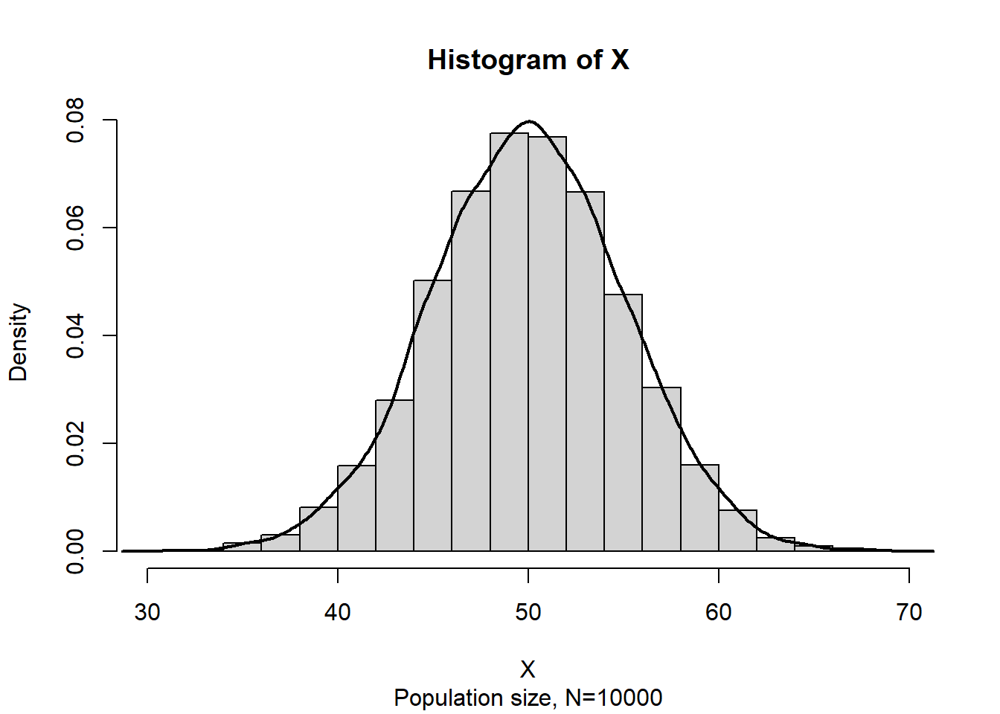
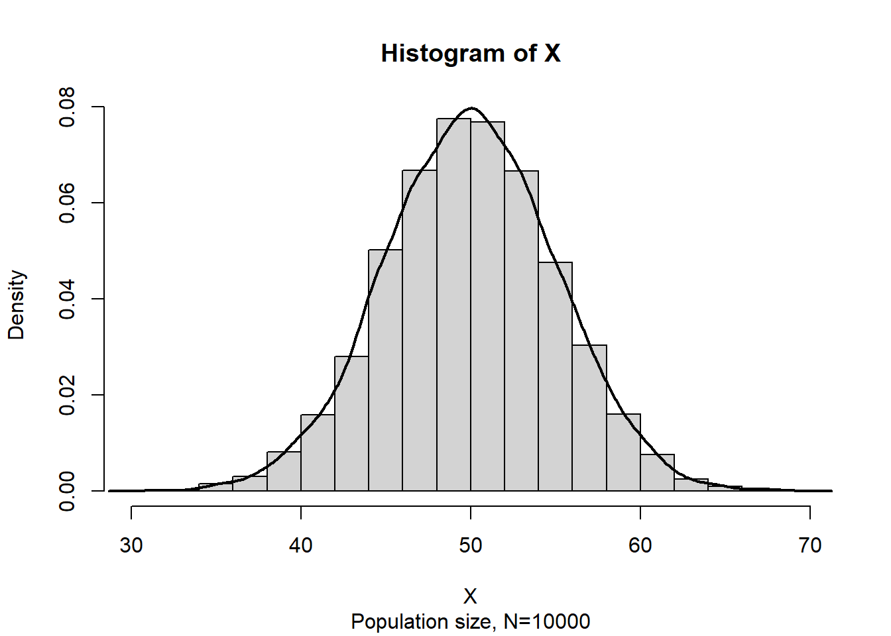

Code
set.seed(36)
X<-rnorm(10000,50,5)
hist(X,freq = F,sub= "Population size, N=10000")
lines(density(X),lwd=2)
In previous chapter we discuss the sampling properties of the sample mean and varance. In this chapter we discuss abot the parameter estimation.It falls under the bracnh of Statistical Inference. The process of estimation involves determining the approximate value of a population parameter on the basis of sample data. There are two types parameter estimation-(i) point estimation and (ii) interval estimation.
To estimate the value of a population parameter, we compute a corresponding characteristic of the sample, referred to as a sample statistic.
By making the preceding computations, we perform the statistical procedure called point estimation. For instance, we refer to the sample mean \(\bar x\) as the point estimator of the population mean \(\mu\).
The numerical value obtained for , is called the point estimate.
| Population parameter | Symbol | Point estimator |
|---|---|---|
| Population mean | \(\mu\) | Sample mean, \(\bar x=\frac{\sum x}{n}\) |
| Population standard deviation | \(\sigma\) | Sample standard deviation, \(s=\sqrt{\frac{\sum(x-\bar x)^2}{n-1}}=\sqrt {\frac{\sum x^2 -n\cdot \bar x^2}{n-1}}\) |
| Population proportion | \(p\) | Sample proportion, \(\hat p=\frac{\# \ \ of \ \ outcomes\ \ of \ \ interest }{n}\) |
Suppose
\(\theta\) be the population parameter of interest
\(\hat \theta\) be the sample statistic or point estimator of \(\theta\)
A “good” estimator has some desirable properties.
A sample statistic \(\hat \theta\) is said to be unbiased estimator of the population parameter \(\theta\) if
\[ E(\hat\theta)=\theta \]
Problem 9.1 Show that the function of sample mean \(\bar X\) is the unbiased estimator of population mean \(\mu\).
Solution:
Here \(X\) is the variable of interest and let \(X_1,X_2,...,X_n\) is a sequence of random sample provided \(E(X_i)=\mu\). The sample mean is \(\bar X=\frac{\sum_{i=1}^n X_i}{n}\).
Now
\[ E(\bar X)=E\left( \frac{\sum_{i=1}^nX_i }{n}\right)=\frac{1}{n}E\left( \sum_{i=1}^n X_i\right) \]
\[ =\frac{1}{n}\sum_{i=1}^n E(X_i)=\frac{1}{n}\sum_{i=1}^n \mu=\frac{1}{n}\cdot n\mu=\mu \]
\[ \therefore E(\bar X)=\mu \]
So, \(\bar X\) is an unbiased estimator of \(\mu\).
Problem 9.2 Show that the function of sample variance \(S^2=\frac{\sum_{i=1}^n(X_i-\bar X)^2}{n-1}\) is an unbiased estimator of population variance \(\sigma^2\).
Solution: See Newbold, Carlson, and Thorne (2013), page 283, or we can proof it as follows:
Suppose that \(X\) is a random variable with mean \(\mu\) and variance \(\sigma^2\). Let \(X_1, X_2 … X_n\) be a random sample of size \(n\) from the population represented by \(X\).
We know \(E(\bar X)=\mu_{\bar X}=\mu\) .
So,
\(Var(X)\) , \(\sigma^2=E(X^2)-\mu^2\)
Or, \(E(X^2)=\mu^2+\sigma^2\)
and
\(Var(\bar X)\), \(\sigma^2_{\bar X}=E(\bar X^2)-\mu_{\bar X}^2\)
Or, \(E(\bar X^2)=\mu_{\bar X}^2+\sigma^2_{\bar X}=\mu^2+\frac{\sigma^2}{n}\)
Now,
\(E(S^2)=E\left[ \frac{\sum_{i=1}^n (X_i-\bar X)^2}{n-1}\right]=\frac{1}{n-1}E \sum_{i=1}^n (X_i-\bar X)^2=\frac{1}{n-1}E\sum_{i=1}^n(X_i^2+\bar X^2-2 X_i \bar X)\)
\(=\frac{1}{n-1} E\left ( \sum_{i=1}^n X_i^2-n\bar X^2 \right)=\frac{1}{n-1} \left [\sum_{i=1}^n E(X_i^2)-n E(\bar X^2) \right]\)
\(=\frac{1}{n-1} \left[ \sum_{i=1}^n (\mu^2+\sigma^2)-n(\mu^2+\frac{\sigma^2}{n}) \right]=\frac{1}{n-1} \left[ n\mu^2+n \sigma^2-n\mu^2-\sigma^2 \right]\)
\(=\frac{1}{n-1}(n-1) \sigma^2=\sigma^2\)
\(\therefore E(S^2)=\sigma^2\).
Hence \(S^2\) is an unbiased estimator of \(\sigma^2\).
Problem 9.3 (Anderson 2020) A simple random sample of 30 managers and the corresponding data on annual salary and management training program participation are as shown in Table 9.2
| Annual Salary ($000) | Management Training Program |
|---|---|
| 49.09 | Yes |
| 53.26 | Yes |
| 49.64 | Yes |
| 49.89 | Yes |
| 47.62 | No |
| 45.92 | Yes |
| 49.09 | Yes |
| 51.40 | Yes |
| 50.96 | Yes |
| 45.11 | Yes |
| 45.92 | No |
| 57.27 | Yes |
| 55.69 | No |
| 51.56 | No |
| 56.19 | No |
| 51.77 | Yes |
| 52.54 | No |
| 44.98 | Yes |
| 51.93 | Yes |
| 52.97 | Yes |
| 45.12 | Yes |
| 51.75 | Yes |
| 54.39 | No |
| 50.16 | No |
| 52.97 | Yes |
| 50.24 | Yes |
| 52.79 | Yes |
| 50.98 | No |
| 55.86 | Yes |
| 57.31 | No |
a) Compute sample mean and standard deviation of annual salary ($) of a random sample of 30 EAI managers.
Solution:
Let \(\mu\) be the population mean of annual salary of all EAI managers.
If \(X\) is the annual salary in ’000 USD, then the to estimate \(\mu\) we use sample mean \(\bar x\) as follows:
\[ \bar x=\frac{\sum_{i=1}^n x_i}{n}=\frac{49.09+53.26+...+57.31}{30}\approx51.1457 \]
So the sample mean is \(\$ 51145.7\).
Similarly let \(\sigma\) be the population standard deviation of annual salary of all EAI managers.
The estimate of \(\sigma\) is the sample standard deviation \(s\) as follows:
\[ s=\sqrt \frac{\sum_{i=1}^n x_i^2 -n\cdot (\bar x)^2}{n-1} \]
\[ =\sqrt \frac{(49.09^2+53.26^2+...+57.31^2)-30\cdot (51.1457)^2}{30-1} \]
\[ \approx 3.5408 \]
So the sample standard deviation is \(\$ 3540.8\).
b) Also, estimate the proportion of managers in the population who completed the management training program.
Solution: Here, \(n=30\)
Let, \(p\) be the population proportion of managers who completed the training
The estimate of \(p\) is:
\[ \hat p=\frac {\# \ \ of\ \ yes}{n}=\frac{20}{30}=0.6667\approx 66.67\% \]
Problem 9.4 (Anderson 2020)Many drugs used to treat cancer are expensive. Business Week reported on the cost per treatment of Herceptin, a drug used to treat breast cancer (Business Week, January 30, 2006). Typical treatment costs (in dollars) for Herceptin are provided by a simple random sample of 10 patients.
4376 ,5578, 2717, 4920, 4495, 4798, 6446, 4119, 4237, 3814
a) Develop a point estimate of the mean cost per treatment with Herceptin.
b) Develop a point estimate of the standard deviation of the cost per treatment with Herceptin.
Instead of estimating a population parameter by a single value (point estimator) it is more reasonable to estimate with an interval with some confidence (probability) that our parameter value will be in the interval.
An interval estimator is a rule for determining (based on sample information) an interval that is likely to include the parameter. The general form of an interval estimate is as follows:
\[ Point\ \ estimate \pm margin \ \ of \ \ error \]
Due to sampling variability, interval estimator is also random.
The \((1-\alpha)100\%\) confidence interval for \(\mu\) is :
\[ \bar x \pm z_{\alpha/2} \frac{\sigma}{\sqrt n} \tag{9.1}\]
Or,
\[ \bar x-z_{\alpha/2}\frac {\sigma}{\sqrt n}, \bar x+z_{\alpha/2}\frac {\sigma}{\sqrt n} \]
We can express this confidence interval in a probabilistic way:
\[ P\left( \bar x-z_{\alpha/2}\frac{\sigma}{\sqrt n}<\mu<\bar x+z_{\alpha/2}\frac{\sigma}{\sqrt n} \right)=1-\alpha \]
NOTE:
1) Here, \(z_{\alpha/2}\) is the \(z\) value providing an area of \(\alpha/2\) in the upper tail of the standard normal distribution that is \(P(Z>z_{\alpha/2})=\alpha/2\).
2) \(z_{\alpha/2} \cdot \frac{\sigma}{\sqrt n}\) is often called margin of error (ME).
The probabilistic equation of confidence interval says that, if we repeatedly construct confidence intervals in this manner, we will expect \((1-\alpha)100\%\) of them contain \(\mu\).
Suppose \(X\sim N(50,5^2)\) . Now consider a population data of size \(N=10000\) and the histogram of \(X\) is:
set.seed(36)
X<-rnorm(10000,50,5)
hist(X,freq = F,sub= "Population size, N=10000")
lines(density(X),lwd=2)
Now we draw a random sample of size \(n=50\) from this population and construct a 95% confidence interval (CI) for \(\mu\). The CI may or may not include the \(\mu=50\) !!!
set.seed(36)
mu=50;sigma=5
## Constructing (1-alpha)*100% CI
alpha=0.05
con.coef=1-alpha # confidence level
z=round(abs(qnorm(alpha/2)),2)# z=1.96
n=50 # sample size
s.e<-sigma/sqrt(n)
sampl_1<-sample(X,n)
cat("Sample data :", sampl_1)Sample data : 52.60842 55.16664 59.23435 44.2092 50.94234 43.34063 44.65922 53.81687 47.60075 46.63776 49.04826 49.44461 52.87322 46.22968 48.2174 55.67331 53.41989 51.86472 54.8001 41.25542 47.11374 47.38467 46.27874 49.85406 44.46384 52.43189 44.33381 53.19745 53.2059 57.02731 43.5203 48.93579 50.28559 55.69281 48.55212 49.2889 45.48768 46.8649 46.96022 35.22993 54.00936 58.99123 50.92287 45.76209 45.1751 44.65327 48.44115 49.47725 55.49664 44.73951cat("Sample mean:",round(mean(sampl_1),2))Sample mean: 49.3ci_1<-c(lower=mean(sampl_1)-z*s.e,upper=mean(sampl_1)+z*s.e)
#ci_1[1]
cat("95% CI:","\n", "[Lower ,Upper]","\n", "[",round(ci_1[1],2),",",round(ci_1[2],2),"]")95% CI:
[Lower ,Upper]
[ 47.91 , 50.68 ]Luckily our 95% CI contains the true population mean \(\mu=50\) 😊.
Lets simulate 100 samples each of size \(n=50\) and construct all 95% CIs.
library(tidyverse)
# Suppose, X~N(50,5^2); so
#cat("mu=",50,",", "sigma=",5)
# Let simulate 100 samples each of size n=50
sampl=0
B=100 # number of samples we have drawn from population X
sampl<-(replicate(B,sample(X,n,replace = FALSE)))
sample.means<-colMeans(sampl)
#class(sample.means)
sample.means<-as.data.frame(sample.means)
#class(sample.means)
sample.means%>%rename(x_bar=sample.means)->sample.means
ci<-sample.means%>%mutate(ll=x_bar-z*s.e,ul=x_bar+z*s.e)
ci%>%mutate(id=1:100)%>%select(id,x_bar,ll,ul)->ci
ci%>%mutate(Capture=ifelse(50>ll & 50<ul,"1","0"))->ci_95
#ci%>%head()
# https://statisticsglobe.com/draw-plot-with-confidence-intervals-in-r
colorset = c('0'='red','1'='black')
labels<- expression("Population mean,"~mu == 50)
ggplot(ci_95, aes(id, x_bar)) +
geom_point() +
geom_errorbar(aes(ymin = ll, ymax = ul,color = Capture))+
geom_hline(yintercept = 50, linetype = "dashed", color = "blue")+
scale_color_manual(values = colorset)+
ylim(45,55)+
scale_x_continuous(breaks = seq(1,100,5),limits=c(0, 101))+
#annotate("text",label=paste("Population mean,mu=",mu),x=90,y=54)+
annotate("text",x=90,y=53.5,label=as.character(labels),parse=TRUE)+
labs(title =paste(con.coef*100, "% Confidence Intervals, n =", n),
x="Sample ID")+
coord_flip()+
theme_bw()We can see that out of 100 CIs , 95 of them contain true population mean \(\mu=50\) and the rest 5 do not.
| \(1-\alpha\) | \(\alpha\) | \(z_{\alpha/2}\) |
|---|---|---|
| 0.90 | 0.10 | 1.645 |
| 0.95 | 0.05 | 1.96 |
| 0.98 | 0.02 | 2.33 |
| 0.99 | 0.01 | 2.575 |
The \((1-\alpha)100\%\) confidence interval for \(\mu\) is :
\[ \bar x \pm t_{\alpha/2} \frac{s}{\sqrt n} \tag{9.2}\]
Or,
\[ \bar x-t_{\alpha/2}\frac {s}{\sqrt n}, \bar x+t_{\alpha/2}\frac {s}{\sqrt n} \]
We can express this confidence interval in a probabilistic way:
\[ P\left( \bar x-t_{\alpha/2}\frac{s}{\sqrt n}<\mu<\bar x+t_{\alpha/2}\frac{s}{\sqrt n} \right)=1-\alpha \]
Here, \(t_{\alpha/2}\) is the \(t\) value providing an area of \(\alpha/2\) in the upper tail of the \(t\) distribution with \((n-1)\) degrees of freedom that is \(P(T>t_{\alpha/2,n-1})=\alpha/2\).
Problem 9.5 (Keller 2014, 341) In a survey conducted to determine, among other things, the cost of vacations, 64 individuals were randomly sampled. Each person was asked to compute the cost of her or his most recent vacation and the sample mean was $1810.16. Assuming that the standard deviation is $400, estimate with 95% confidence the average cost of all vacations.
Problem 9.6 (Keller 2014, 340) It is known that the amount of time needed to change the oil on a car is normally distributed with a standard deviation of 5 minutes. The amount of time to complete a random sample of 10 oil changes was recorded and listed here. Compute the 99% confidence interval estimate of the mean of the population.
11, 10, 16, 15 ,18, 12 ,25,20, 18 ,24
Problem 9.7 (Newbold, Carlson, and Thorne 2013, 302) How much do students pay, on the average, for textbooks during the first semester of college? From a random sample of 400 students the mean cost was found to be $357.75, and the sample standard deviation was $37.89. Assuming that the population is normally distributed, find the 95% confidence interval for the population mean.
Problem 9.8 (Newbold, Carlson, and Thorne 2013, 302)Twenty people in one large metropolitan area were asked to record the time (in minutes) that it takes them to drive to work. These times were as follows:
30, 42, 35, 40, 45, 22, 32, 15, 41, 45, 28, 32, 45, 27, 47, 50, 30, 25, 46, 25
Assuming that the population is normally distributed find the 99% confidence interval for the population mean of time it takes to drive to work.
From previous chapter we know if \(np\) and \(np(1-p)\) is equal or greater than \(5\) then the sample proportion \(\hat p\) will approximately follow normal distribution with mean \(p\) and variance \(\frac{p(1-p)}{n}\).
Mathematically,
\[ Z=\frac{\hat p-p}{\sqrt {\frac{p(1-p)}{n}}}\approx follows \ \ N(0,1) \]
Since \(p\) is unknown we estimate \(var(\hat p)\) as \(\sqrt { \frac{\hat p(1-\hat p)}{n}}\).
Confidence Interval for Population Proportion, \(p\) (Large Samples)
\[
\hat p\pm z_{\alpha/2} \sqrt {\frac{\hat p(1-\hat p)}{n}}
\tag{9.3}\]
which is valid provided that \(n\hat p\) and \(n(1 - \hat p)\) are greater than 5.
Problem 9.9 (Newbold, Carlson, and Thorne 2013, 305) In a random sample of 95 manufacturing firms, 67 indicated that their company attained ISO certification within the last two years. Find a 99% confidence interval for the population proportion of companies that have been certified within the last 2 years.
Problem 9.10 (Newbold, Carlson, and Thorne 2013, 305) From a random sample of 400 registered voters in one city, 320 indicated that they would vote in favor of a proposed policy in an upcoming election. Find a 98% confidence interval for the population proportion in favor of this policy.